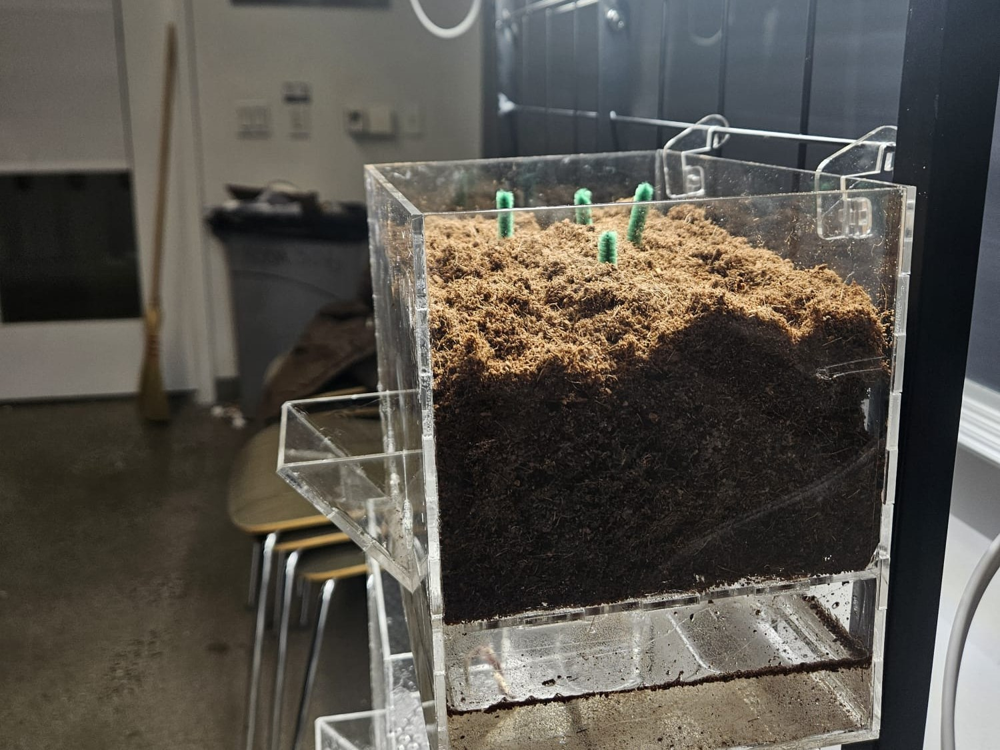
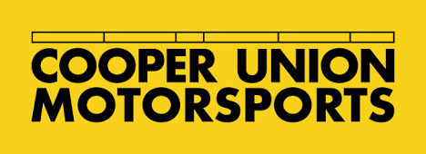
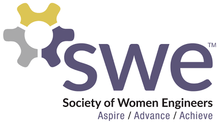
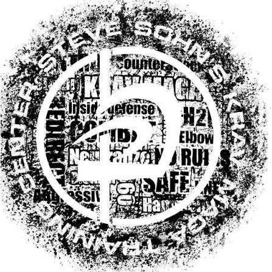

Portfolio
Rio Ben-Yehoshua
Mechanical engineering student at The Cooper Union in New York City, graduating May 2029.
Profile
About me
I’m Rio, a sophomore studying mechanical engineering at The Cooper Union. I’m drawn to designing and building systems that actually work, and my process is to build it, test it, see where it fails, and fix it.
I’m curious about controls and mechatronics, where mechanical design meets sensors, motors, and code. I’m looking for hands-on engineering experience and still exploring where it leads.
Outside of class, I like to cook. A recipe doesn’t always come out right the first time, and I enjoy that part: tasting, adjusting, and trying again. I approach engineering the same way, and I enjoy it just as much: test something, see what didn’t work, and try again until it does.
Projects
Selected work
 Spring 2026 · 1st place
Spring 2026 · 1st placeAngry Birds Ping Pong Recirculation System
An autonomous launch-and-recover machine that scored 110 passes in 60 seconds and placed 1st in class. I worked on the flywheel launcher and the ball return loop.
View project →
 Spring 2026
Spring 2026Digital Load Cell Scale
A prototype digital scale: a custom enclosure, load cells, an HX711 amplifier, Arduino code and an LCD, with tare and gram/ounce controls.
View project →

Fall 2025PlantPlex
A self-sufficient indoor farming grid for small apartments, built for people with no gardening experience: removable pods that wick water by capillary action, with no pump. I designed and built the physical prototype.
View project →
Skills
What I work with
Programming
C, Python, Arduino
Used in Ping Pong (launcher control code) and Load Cell Scale (weighing code)
CAD & tools
SolidWorks, Autodesk Fusion, Onshape, LaTeX, Excel
SolidWorks: Motorsports pedal box mount
Onshape: Ping Pong hoop
Fabrication
3D printing, laser cutting, soldering
3D printing: Ping Pong launcher, scale enclosure
Laser cutting: Ping Pong hoop
Activities
Beyond the classroom

Motorsports Club
Body Cockpit Safety team · Spring 2026 to presentDesign and research for the car’s cockpit and safety systems. I designed a pedal box chassis mount in SolidWorks, evaluated driver harness ergonomics and mounting, and researched suspension architectures and spring-damper specifications. I also reviewed FSAE requirements to select materials for the floor closeout, firewall and thermal insulation.
ASME
Sophomore RepresentativeI serve as the link between my class and the chapter, coordinating through a class Teams group chat, helping plan chapter events and attending biweekly meetings.

Society of Women Engineers
MemberI attend SWE events, which open up opportunities to connect with upperclassmen and professors across engineering.
Hillel
MemberI take part in weekly meetings centered on Jewish learning.

Krav Maga
Student and volunteer assistant coach · 2016 to 2025Trained 9+ years to an advanced rank, then coached students from age 11 to 70, adapting drills for beginners, advanced students and autistic students.